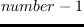
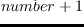

ベクトル(1次元行列)とリストは、一般の列である。
文字列(string)は、文字(character)のベクトルなので、列である。
map, concatenateやcoerceにおける結果の型を明記するためには、
クラスオブジェクトがsymbolにバインドされていないので、引用符なしで
cons, string, integer-vector, float-vectorなどのクラス名symbolを使う。
elt sequence pos [関数]
-
-
eltは、sequenceの中のpos番目の位置の値を得たり、(setfと
ともに)置いたりする最も一般的な関数である。
sequenceは、リストまたは任意のオブジェクト、bit, char, integer, floatの
ベクトルである。
eltは、多次元の行列に適用できない。
length sequence [関数]
-
-
sequenceの長さを返す。
ベクトルにおいて、lengthは一定の時間で終了する。
しかし、リスト型においては、長さに比例した時間がかかる。
lengthが、もし環状リストに適用されたとき、決して終了しない。
代わりにlist-lengthを使用すること。
もし、sequenceがfill-pointerを持つ行列ならば、
lengthは行列全体のサイズを返すのではなくfill-pointerを返す。
このような行列のサイズを知りたい場合には、array-total-sizeを
使用すること。
subseq sequence start [end] [関数]
-
-
sequenceのstart番目から(end
 1)番目までをそっくりコピーした
列を作る。
endは、デフォルト値としてsequenceの長さをとる。
1)番目までをそっくりコピーした
列を作る。
endは、デフォルト値としてsequenceの長さをとる。
copy-seq sequence [関数]
-
-
sequenceのコピーした列を作る。
このコピーでは、sequenceのトップレベルの参照のみがコピーされる。
入れこリストのコピーにはcopy-treeを使い、
再帰参照を持つような列のコピーには
copy-objectを使うこと。
reverse sequence [関数]
-
-
sequenceの順番を逆にし、sequenceと同じ型の新しい列を
返す。
nreverse sequence [関数]
-
-
nreverseは、reverseの破壊(destructive)バージョンである。
reverseはメモリを確保するが、nreverseはしない。
concatenate result-type {sequence}* [関数]
-
-
全てのsequenceを連結させる。
それぞれのsequenceは、なにかの列型である。
appendと違って、最後の一つまで含めた全ての列がコピーされる。
result-typeは、cons,string,vector,float-vectorなどの
クラスである。
coerce sequence result-type [関数]
-
-
sequenceの型を変更する。
例えば、(coerce '(a b c) vector) = #(a b c)や
(coerce "ABC" cons) = (a b c)である。
result-type型の新しい列が作られ、
sequenceのそれぞれの要素はその列にコピーされる。
result-typeは、vector, integer-vector, float-vector, bit-vector, string, cons
またはそれらの1つを継承したユーザー定義クラス
のうちの1つである。
coerceは、sequenceの型がresult-typeと同一である場合、コピーをする。
map result-type function seq &rest more-seqs [関数]
-
-
functionは、seqとmore-seqsのそれぞれのN番目(
 )の要素
からなるリストに
対して適用され、その結果はresult-typeの型の列に蓄積される。
)の要素
からなるリストに
対して適用され、その結果はresult-typeの型の列に蓄積される。
fill sequence item &key (:start 0) (:end (length sequence)) [関数]
-
-
sequenceのstart番目から(end1)番目まで、itemで満たす。
replace dest source &key :start1 :end1 :start2 :end2 [関数]
-
-
dest列の中のstart1からend1までの要素が、
source列の中のstart2からend2までの要素に置き換えられる。
start1とstart2のデフォルト値はゼロで、
end1とend2のデフォルト値はそれぞれの列の長さである。
もし片方の列がもう一方よりも長いならば、
endは短い列の長さに一致するように縮められる。
sort sequence compare &optional key [関数]
-
-
sequenceは、Unixのquick-sortサブルーチンを使って破壊的に(destructively)
にソートされる。
keyは、キーワードパラメータでなく、比較用のパラメータである。
同じ要素を持った列のソートをするときは十分気をつけること。
例えば、(sort '(1 1) #'>)は失敗する。なぜなら、1と1の比較は
どちらからでも失敗するからである。
この問題を避けるために、比較として#'か#'のような関数を用いる。
merge result-type seq1 seq2 pred &key (:key #'identity) [関数]
-
-
２つの列seq1とseq2は、result-type型の１つの列に
合併され、それらの要素はpredに記述された比較を満足する。
merge-list list1 list2 pred key [関数]
-
-
２つのリストを合併させる。mergeと違って、一般列は引数として
許可されないが、merge-listはmergeより実行が速い
次の関数は、1つの基本関数と-ifや-if-notを後に付けた変形関数から成る。
基本形は、少なくともitemとsequenceの引数を持つ。
sequenceの中のそれぞれの要素とitemを比較し、
何かの処理をする。
例えば、インデックスを探したり、
現れる回数を数えたり、itemを削除したりなど。
変形関数は、predicateとsequenceの引数を持つ。
sequenceのそれぞれの要素にpredicateを適用し、
もしpredicateがnon-NILを返したとき(-if version)、
またはNILを返したとき(-if-not version)に何かをする。
position item seq &key :start :end :test :test-not :key (:count 1) [関数]
-
-
seqの中からitemと同一な要素を探し、
その要素の中で:count番目に現れた要素の
インデックスを返す。
その探索は、:start番目の要素から始め、それ以前の要素は無視する。
デフォルトの探索は、eqlで実行されるが、
testかtest-notパラメータで変更できる。
position-if predicate seq &key :start :end :key [関数]
-
-
position-if-not predicate seq &key :start :end :key [関数]
-
-
find item seq &key :start :end :test :test-not :key (:count 1) [関数]
-
-
seqの中のstart番目の要素から
:end番目の要素までの間で要素を探し、
その探された要素の内、:count番目の要素を返す。
その要素は、:testか:test-notに#'eql
以外のものが記述されていないなら、itemと同じものである。
find-if predicate seq &key :start :end :key (:count 1) [関数]
-
-
seqの要素の中でpredicateがnon-NILを返す要素の内、
:count番目の要素を返す。
find-if-not predicate seq &key :start :end :key [関数]
-
-
count item seq &key :start :end :test :test-not :key [関数]
-
-
seqの中の:start番目から:end番目までの要素にitemが
何回現れるか数える。
count-if predicate seq &key :start :end :key [関数]
-
-
predicateがnon-NILを返すseq内の要素数を数える。
count-if-not predicate seq &key :start :end :key [関数]
-
-
remove item seq &key :start :end :test :test-not :key :count [関数]
-
-
seqの中の:start番目から:end番目までの要素のなかで、
itemと同一の要素を探し、:count
（デフォルト値は∞）番目までの要素を削除した新しい列を作る。
もし、itemが一回のみ現れることが確定しているなら、
無意味な探索を避けるために、:count=1を指定すること。
remove-if predicate seq &key :start :end :key :count [関数]
-
-
remove-if-not predicate seq &key :start :end :key :count [関数]
-
-
remove-duplicates seq &key :start :end :key :test :test-not :count [関数]
-
-
seqの中から複数存在するitemを探し、その中の1つだけを残した新しい列を作る。
delete item seq &key :start :end :test :test-not :key :count [関数]
-
-
deleteは、seq自体を修正し、新しい列を作らないことを除いては、
remove同じである。
もし、itemが一回のみ現れることが確定しているなら、
無意味な探索を避けるために、:count=1を指定すること。
delete-if predicate seq &key :start :end :key :count [関数]
-
-
delete-if-not predicate seq &key :start :end :key :count [関数]
-
-
removeやdeleteの:countデフォルト値は、1,000,000である。
もし列が長く、削除したい要素が一回しか現れないときは、
:countを1と記述すべきである。
substitute newitem olditem seq
&key :start :end :test :test-not :key :count [関数]
-
-
seqの中で:count番目に現れたolditemをnewitemに置き換えた
新しい列を返す。
デフォルトでは、全てのolditemを置き換える。
(substitute #\Space #\_ "Euslisp_euslisp") ;; => "Euslisp euslisp"
substitute-if newitem predicate seq &key :start :end :key :count [関数]
-
-
substitute-if-not newitem predicate seq &key :start :end :key :count [関数]
-
-
nsubstitute newitem olditem seq &key :start :end :test :test-not :key :count [関数]
-
- seqの中でcount番目に現れたolditemをnewitemに置き換え、
元の列seqに返す。デフォルトでは、全てのolditemを置き換える。
nsubstitute-if newitem predicate seq &key :start :end :key :count [関数]
-
-
nsubstitute-if-not newitem predicate seq &key :start :end :key :count [関数]
-
-
2016-03-23